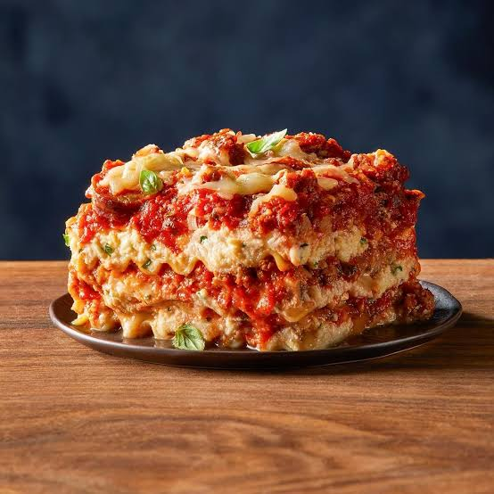

Lasagna is a traditional Italian baked dish made by stacking layers of wide, flat pasta with a rich meat sauce, tomatoes, and creamy cheese. Usually, it includes a mix of ricotta, mozzarella, and Parmesan, which melt together in the oven to create a delicious, bubbly, golden crust. Loved for its comforting and hearty nature, lasagna is the perfect meal for family dinners and special gatherings. While it takes a little bit of time and patience to prepare, the incredible combination of savory flavors and gooey cheese makes every single bite completely worth the effort.